Dados espaciais no R
Last updated: 07 novembro, 2020
Instalação dos packages para manipulação de dados espaciais no R
Inicialmente, faz-se necessária a instalação e carregamento dos packages:
| Package | utilização |
|---|---|
| raster | informações espaciais matriciais |
| OpenStreetMap | dados o OSM |
| RgoogleMaps | dados do Google Maps |
| grid | |
| rgdal | ler e escrever dados espaciais |
| tidyverse | organização de dados |
| reshape2 | |
| ggmosaic | |
| GISTools | ler e escrever dados espaciais |
| sf | manipulação de dados espaciais |
| tmap | mapas temáticos |
library(raster)
library(rJava)
library(OpenStreetMap)
library(RgoogleMaps)
library(grid)
library(rgdal)
library(tidyverse)
library(reshape2)
library(ggmosaic)
library(GISTools)
library(sp)
library(sf)
library(tmap)
library(tmaptools)
library(mapview)Introdução aos packages sp e sf
O package sf é uma evolução do package sp. Na maioria dos casos, é interessante utilizar o sf, mas para algumas implementações, como por exemplo o uso de funções no spdep para técnicas de análise espacial, faz-se necessária a utilização do sp.
Dados espaciais sp
Por meio do package sp é possível definir classes (ou objetos sp) para manipulação de dados vetoriais pontos, linhas e polígonos.
Formatos de dados espacais no R
| Sem atributos | Com atributos | Equivalente ESRI |
|---|---|---|
| SpatialPoints | SpatialPointsDataFrame | Point shapefiles |
| SpatiaLines | SpatialLinesDataFrame | Line shapefiles |
| SpatialPolygons | SpatialPolygonsDataFrame | Polygon shapefiles |
Dados espaciais GISTools
O package GISTools vem com diferentes bancos de dados que podem ajudar no entendimento das funções. Utilizaremos dois conjuntos dados para explorar as funcionalidades deste package, a saber: (i) dados representados em linhas e polígonos referentes aos municípios na Georgia, considerando New Haven e Connecticut nos EUA. Os dados de New Haven contemplam dados de estatísticas de crimes, rodovias, informações demográficas, ferrovias e locais. O dado da Georgia inclui os limites municipais com alguns atributos relacionados aos dados de 1990 (população total, população rural, que tem curso superior, estrangeira, idosos, linha da pobreza, negros, renda média).
Para carregar os dados, utilize a função data().
library(GISTools)
data(newhaven)
ls() # inspecionar os dadosVerifique as classes dos objetos:
class(breach)## [1] "SpatialPoints"
## attr(,"package")
## [1] "sp"class(blocks)## [1] "SpatialPolygonsDataFrame"
## attr(,"package")
## [1] "sp"Os dados associados ao objeto blocks podem ser visualizados por meio da função:
head(data.frame(blocks))O data frame de um objeto espacial sp também pode ser acessado por meio de @data:
head(blocks@data)Os dados das unidades censitárias de New Haven podem ser visualizados por meio de:
plot(blocks)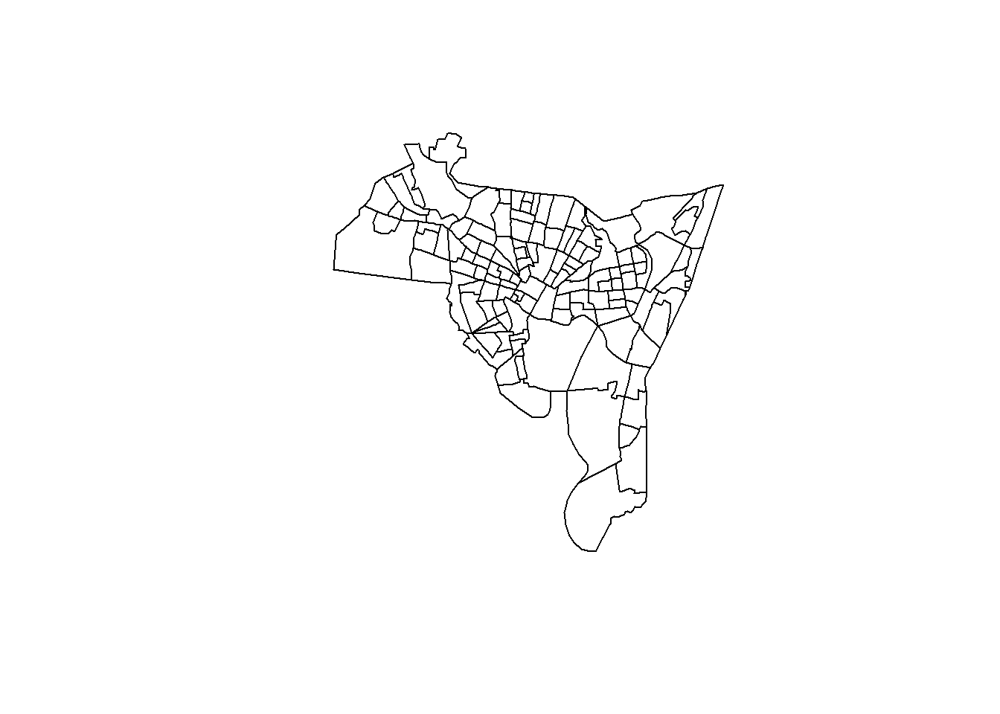
Para plotar as unidades censitárias e as rodovias em vermelho. A função par serve para plotar mais de um gráfico em uma mesma representação. Existem diferentes parâmetros para essa função. Por exemplo, o mfrow refere-se ao número de linhas e colunas para combinar as plotagens.O parâmetro mar ajuda na definição de margens.
par(mar = c(0,0,0,0))
plot(roads, col="red")
plot(blocks, add=TRUE)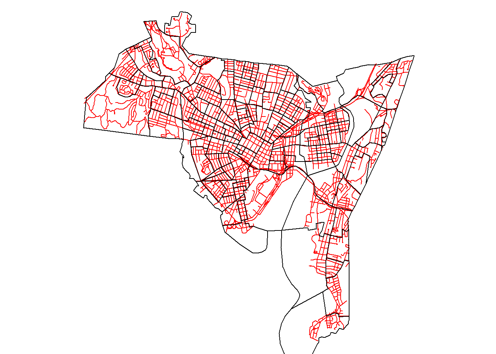
Dados espaciais sf
knitr::include_graphics("./img/sf.png")
Uma nova classe de objetos espaciais no R foi definida por meio do package denominado sf. O objetivo de desenvolvimento deste package é padronizar o formato dos dados espaciais.
Uma evolução de dados espaciais no R pode ser vista em Spatial Data in R: New Directions by Edzer Pebesma.
A ideia por trás do package sf é de que uma feição seja um objeto, ou seja, uma representação de um objeto do mundo real. As feições apresentam informações sobre onde estão localizadas na Terra, e atributos relacionados aos fenômenos reais. Existem muitos tipos de objetos sf
Mais informações sobre o package
sfpodem ser encontrada em Simple Features for R
Os objetos espaciais mais usuais são:
| Tipo | Descrição |
|---|---|
| POINT | zero-dimensional geometry containing a single point |
| LINESTRING | sequence of points connected by straight, non-self intersecting line pieces; one-dimensional geometry |
| POLYGON | geometry with a positive area (two-dimensional); sequence of points form a closed, non-self intersecting ring; the first ring denotes the exterior ring, zero or more subsequent rings denote holes in this exterior ring |
| MULTIPOINT | set of points; a MULTIPOINT is simple if no two Points in the MULTIPOINT are equal |
| MULTILINESTRING | set of linestrings |
| MULTIPOLYGON | set of polygons |
| GEOMETRYCOLLECTION | set of geometries of any type except GEOMETRYCOLLECTION |
library(sf)
vignette(package = "sf") # visualizar as vignettes
# vignette("sf1", package = "sf")A forma mais simples de converter os dados considerados para análise das funções de sp em objetos do sf é por meio da função st_as_sf().
# carregar o dado
data("georgia")
# converter o dado em sf
georgia_sf <- st_as_sf(georgia)
class(georgia_sf)## [1] "sf" "data.frame"georgia_sf # representa as dez primeiras feições## Simple feature collection with 159 features and 14 fields
## geometry type: MULTIPOLYGON
## dimension: XY
## bbox: xmin: -85.6052 ymin: 30.35541 xmax: -80.84126 ymax: 35.00068
## CRS: +proj=longlat +ellps=WGS84
## First 10 features:
## Latitude Longitud TotPop90 PctRural PctBach PctEld PctFB PctPov PctBlack X Y ID Name MedInc
## 0 31.75339 -82.28558 15744 75.6 8.2 11.43 0.64 19.9 20.76 941396.6 3521764 13001 Appling 32152
## 1 31.29486 -82.87474 6213 100.0 6.4 11.77 1.58 26.0 26.86 895553.0 3471916 13003 Atkinson 27657
## 2 31.55678 -82.45115 9566 61.7 6.6 11.11 0.27 24.1 15.42 930946.4 3502787 13005 Bacon 29342
## 3 31.33084 -84.45401 3615 100.0 9.4 13.17 0.11 24.8 51.67 745398.6 3474765 13007 Baker 29610
## 4 33.07193 -83.25085 39530 42.7 13.3 8.64 1.43 17.5 42.39 849431.3 3665553 13009 Baldwin 36414
## 5 34.35270 -83.50054 10308 100.0 6.4 11.37 0.34 15.1 3.49 819317.3 3807616 13011 Banks 41783
## 6 33.99347 -83.71181 29721 64.6 9.2 10.63 0.92 14.7 11.44 803747.1 3769623 13013 Barrow 49829
## 7 34.23840 -84.83918 55911 75.2 9.0 9.66 0.82 10.7 9.21 699011.5 3793408 13015 Bartow 47309
## 8 31.75940 -83.21976 16245 47.0 7.6 12.81 0.33 22.0 31.33 863020.8 3520432 13017 Ben Hill 28009
## 9 31.27424 -83.23179 14153 66.2 7.5 11.98 1.19 19.3 11.62 859915.8 3466377 13019 Berrien 33786
## geometry
## 0 MULTIPOLYGON (((-82.2252 31...
## 1 MULTIPOLYGON (((-82.6293 31...
## 2 MULTIPOLYGON (((-82.52171 3...
## 3 MULTIPOLYGON (((-84.1407 31...
## 4 MULTIPOLYGON (((-83.27423 3...
## 5 MULTIPOLYGON (((-83.39851 3...
## 6 MULTIPOLYGON (((-83.53751 3...
## 7 MULTIPOLYGON (((-84.6533 34...
## 8 MULTIPOLYGON (((-83.17781 3...
## 9 MULTIPOLYGON (((-83.1461 31...georgia #apresenta todas as feições## class : SpatialPolygonsDataFrame
## features : 159
## extent : -85.6052, -80.84126, 30.35541, 35.00068 (xmin, xmax, ymin, ymax)
## crs : +proj=longlat +ellps=WGS84
## variables : 14
## names : Latitude, Longitud, TotPop90, PctRural, PctBach, PctEld, PctFB, PctPov, PctBlack, X, Y, ID, Name, MedInc
## min values : 30.7167, -85.50471, 1915, 2.5, 4.2, 1.46, 0.04, 2.6, 0, 635964.3, 3401148, 13001, Appling, 23456
## max values : 34.91864, -81.08524, 648951, 100, 37.5, 22.96, 6.74, 35.9, 79.64, 1059706, 3872640, 13321, Worth, 81603A função plot também funciona de maneira diferente. Ela permite criar objetos sf e se o objeto tiver atributos, ele demarcará com preenchimento das feições. Teste:
# todos os atributos
plot(georgia_sf)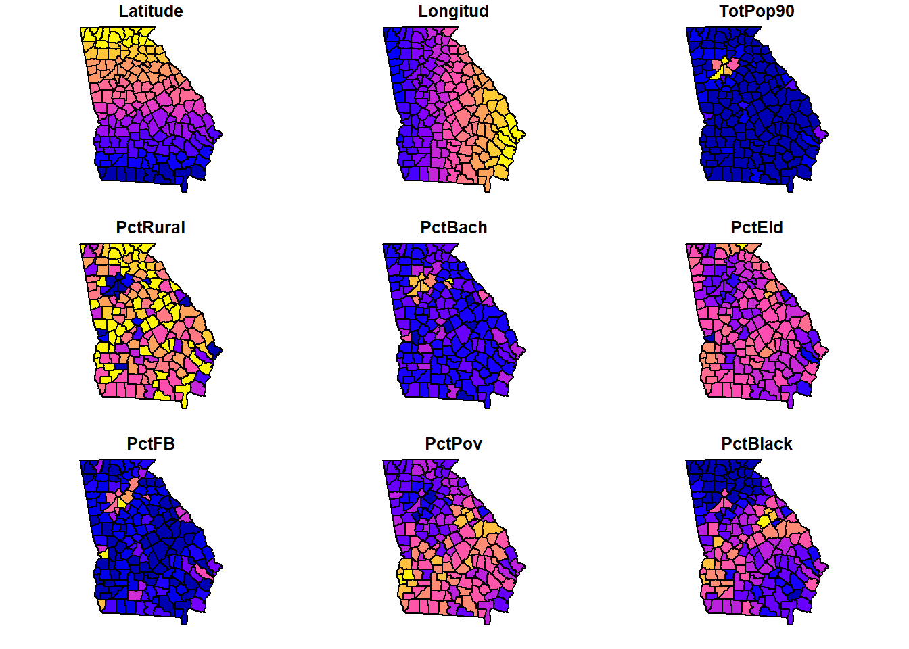
#atributos selecionados
plot(georgia_sf[,6])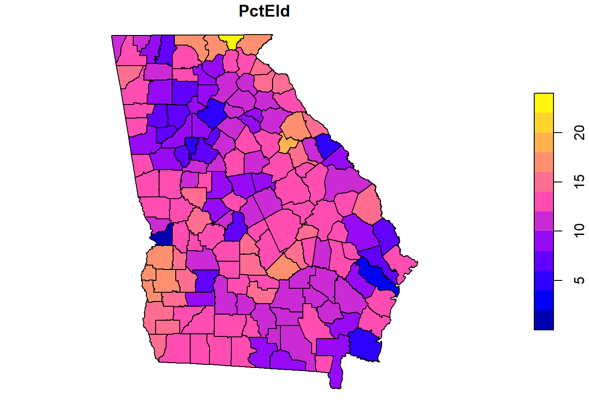
# atributos selecionados
plot(georgia_sf[,c(4,5)])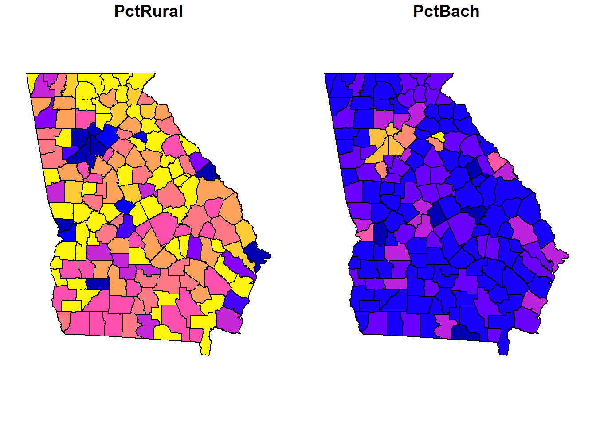
Objetos sf apresentam data frame. O data frame de sp e sf podem ser comparados. No data frame dos objetos sf há atributos de geometria, diferentemente do data frame sp.
head(data.frame(georgia))## Latitude Longitud TotPop90 PctRural PctBach PctEld PctFB PctPov PctBlack X Y ID Name MedInc
## 0 31.75339 -82.28558 15744 75.6 8.2 11.43 0.64 19.9 20.76 941396.6 3521764 13001 Appling 32152
## 1 31.29486 -82.87474 6213 100.0 6.4 11.77 1.58 26.0 26.86 895553.0 3471916 13003 Atkinson 27657
## 2 31.55678 -82.45115 9566 61.7 6.6 11.11 0.27 24.1 15.42 930946.4 3502787 13005 Bacon 29342
## 3 31.33084 -84.45401 3615 100.0 9.4 13.17 0.11 24.8 51.67 745398.6 3474765 13007 Baker 29610
## 4 33.07193 -83.25085 39530 42.7 13.3 8.64 1.43 17.5 42.39 849431.3 3665553 13009 Baldwin 36414
## 5 34.35270 -83.50054 10308 100.0 6.4 11.37 0.34 15.1 3.49 819317.3 3807616 13011 Banks 41783head(data.frame(georgia_sf))## Latitude Longitud TotPop90 PctRural PctBach PctEld PctFB PctPov PctBlack X Y ID Name MedInc
## 0 31.75339 -82.28558 15744 75.6 8.2 11.43 0.64 19.9 20.76 941396.6 3521764 13001 Appling 32152
## 1 31.29486 -82.87474 6213 100.0 6.4 11.77 1.58 26.0 26.86 895553.0 3471916 13003 Atkinson 27657
## 2 31.55678 -82.45115 9566 61.7 6.6 11.11 0.27 24.1 15.42 930946.4 3502787 13005 Bacon 29342
## 3 31.33084 -84.45401 3615 100.0 9.4 13.17 0.11 24.8 51.67 745398.6 3474765 13007 Baker 29610
## 4 33.07193 -83.25085 39530 42.7 13.3 8.64 1.43 17.5 42.39 849431.3 3665553 13009 Baldwin 36414
## 5 34.35270 -83.50054 10308 100.0 6.4 11.37 0.34 15.1 3.49 819317.3 3807616 13011 Banks 41783
## geometry
## 0 MULTIPOLYGON (((-82.2252 31...
## 1 MULTIPOLYGON (((-82.6293 31...
## 2 MULTIPOLYGON (((-82.52171 3...
## 3 MULTIPOLYGON (((-84.1407 31...
## 4 MULTIPOLYGON (((-83.27423 3...
## 5 MULTIPOLYGON (((-83.39851 3...Para converter dado espaciais sf para sp, faça:
g2 <- as(georgia_sf, "Spatial")
class(g2)## [1] "SpatialPolygonsDataFrame"
## attr(,"package")
## [1] "sp"Lendo e escrevendo dados espaciais no R
Muito frequentemente temos dados no formato shapefile que precisam ser importados para o R. As funções dos packages rgdal e sf permitem essa importação.
Lendo e escrevendo dados sp.
As funções do rgdal para ler e escrever dados espaciais são, respectivamente: readOGR() e writeOGR(). O objeto georgia em sp pode ser convertido em shapefile como a seguir:
Para ler um shapefile, faça:
new_georgia <- readOGR(dsn="./shapefiles/georgia.shp")## OGR data source with driver: ESRI Shapefile
## Source: "D:\google_drive\17_sites\courses\shapefiles\georgia.shp", layer: "georgia"
## with 159 features
## It has 14 fieldsclass(new_georgia)## [1] "SpatialPolygonsDataFrame"
## attr(,"package")
## [1] "sp"new_georgia é um objeto sp. Observe que o parâmetro dns considerado na função writeOGR endereça o folder onde os arquivos shapefile serão armazenados. Atribuir “.” implica na inclusão dos arquivos no diretório padrão do projeto.
As funções
setwd()egetwd()são úteis para identificar o diretório raiz do projeto e para determinar o diretório de trabalho. Para informações sobre como utilizar a função, acesse ?setwd e ?getwd.
Funções para ler e escrever dados espaciais do tipo raster podem ser encontradas também no package rgdal. Explore pelo help as funções writeGDAL e readGDAL.
Lendo e escrevendo dados sf.
O package sf também tem funções que permitem ler e escrever dados espaciais. As funções para isso são st_read() e st_write(). Experimente:
# setwd("./shapefiles/")
#g2 <- st_read("georgia.shp")O diretório deve ser especificado para que os dados espaciais sejam varridos de forma efetiva pelas funções. Para escrever utilizando a função st_write() são necessários dois parâmetros: o objeto e o nome do arquivo.
# st_write(g2, "georgia.shp", delete_layer = TRUE)Esse comando é igual a:
# st_write(g2, dsn="georgia.shp", layer="georgia.shp", driver = "ESRI Shapefile", delete_layer = TRUE)Uma introdução ao package tmap
O package tmap permite o uso de novas funcionalidades para gerar mapas e funções para extração de dados do Google Maps e do OpenStreetMap. O foco do package tmap é a construção de mapas temáticos. Podem ser considerados dados sp e sf. A gramática para construção dos mapas é similar àquela do package ggplot. Assim, a representação de dados espaciais por meio do tmap conta com a manipulação de cada elemento do mapa separadamente em diferentes camadas. Para limpar o workspace, digite:
rm(list=ls())Quick tmap
A função qtm() pode ser utilizada para composição de mapas de maneira expressa (quick). O código a seguir permite carregar o dado georgia, recriar o dado georgia_sf e gerar um mapa expresso.
data("georgia")
ls()## [1] "georgia" "georgia.polys" "georgia2"Para criar o objeto sf georgia_sf, faça:
georgia_sf <- st_as_sf(georgia)Finalmente, crie o mapa expresso utilizando:
library(tmap)
qtm(georgia, fill="red", style = "natural")O uso do parâmetro style permite configurações rápidas de mapas por meio do package tmap. Explore a função qtm para entender os demais temas possíveis.
O parâmetro fill pode ser utilizado para especificar uma cor ou a variável a ser mapeada.
qtm(georgia_sf, fill = "MedInc", text ="Name", text.size=0.5, format = "World_wide", style = "classic", text.root = 5, fill.title = "Median Income")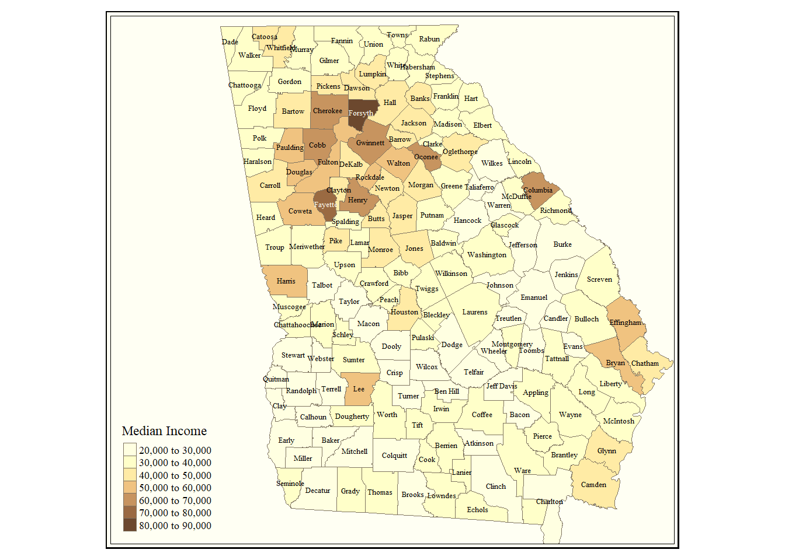
Mapa completo por meio do tmap
Para gerar mapas completos por meio do package tmap, é necessário utilizar a função tm_shapeacompanhada de uma outra função que especifique o precisa ser plotado. Antes de plotar, um objeto contendo a linha da divisa estadual da Georgia pode ser criada por meio da função st_union() do package sf. Uma alternativa para dados sp é função gUnaryUnion() do package rgeos, carregado juntamente com o package GISTools.
# união das feições para composição do limite estadual
g <- st_union(georgia_sf)
# plotar as camadas espaciais
tm_shape(georgia_sf) +
tm_fill("tomato") +
tm_borders(lty="dashed", col = "gold")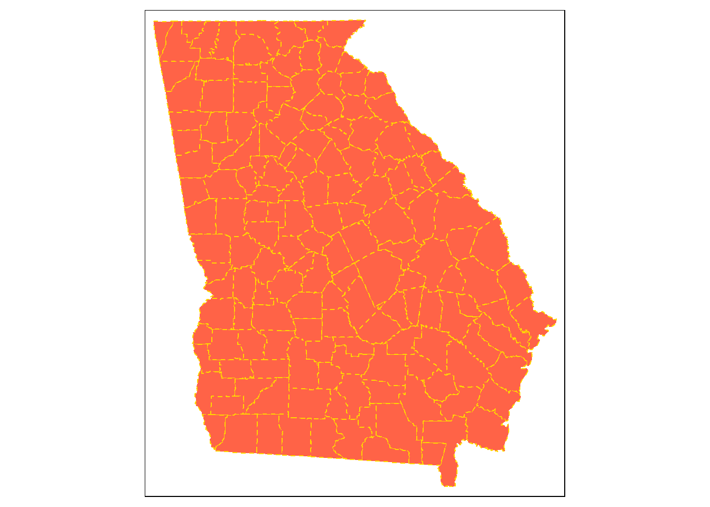
Incluir alguns estilos:
# plotar as camadas espaciais
tm_shape(georgia_sf) +
tm_fill("tomato") +
tm_borders(lty="dashed", col = "gold") +
tm_style("natural", bg.color = "grey90")Incluir limite estadual. Repare que a função tm_shape vai ser chamada novamente uma vez que outro objeto será incluído no mapa.
tm_shape(georgia_sf) +
tm_fill("tomato") +
tm_borders(lty="dashed", col = "gold") +
tm_style("natural", bg.color = "grey90") +
tm_shape(g) +
tm_borders(lwd=2) # lwd - line width - espessura da linha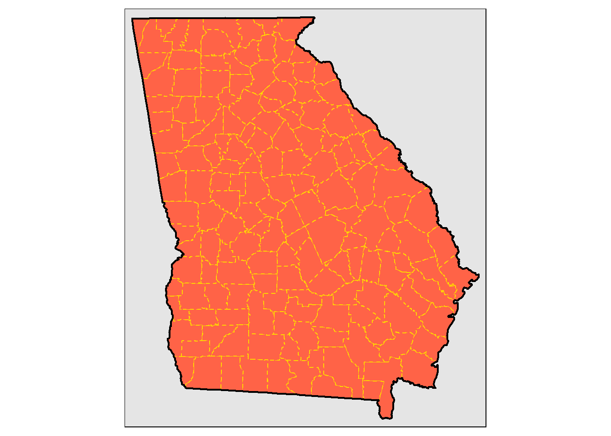
Incluindo todos os parâmetros juntos:
tm_shape(georgia_sf) +
tm_fill("tomato") +
tm_borders(lty="dashed", col = "gold") +
tm_style("natural", bg.color = "grey90") +
tm_shape(g) +
tm_borders(lwd=2) +
tm_layout(title = "O estado da Georgia",
title.size = 1,
title.position = c(0.55, "top"))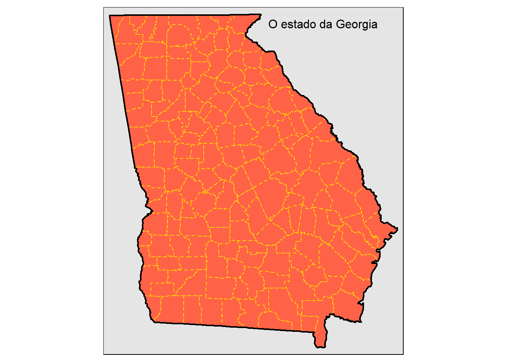
Experimente esses outros parâmetros da função qtm.
data(World, rivers, metro, land)
# just the map
qtm(World)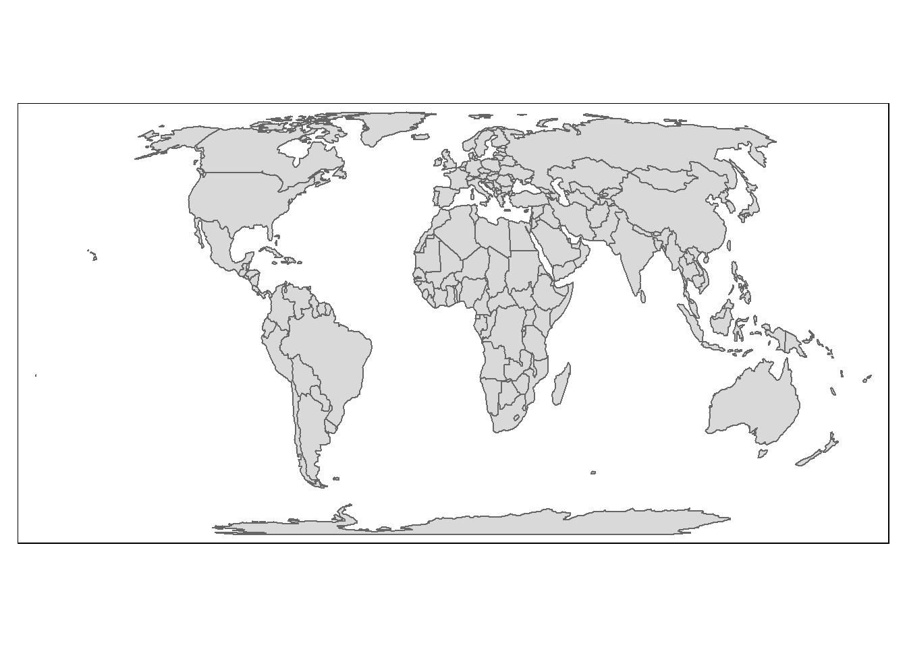
# choropleth
qtm(World, fill = "economy", format = "World", style = "col_blind")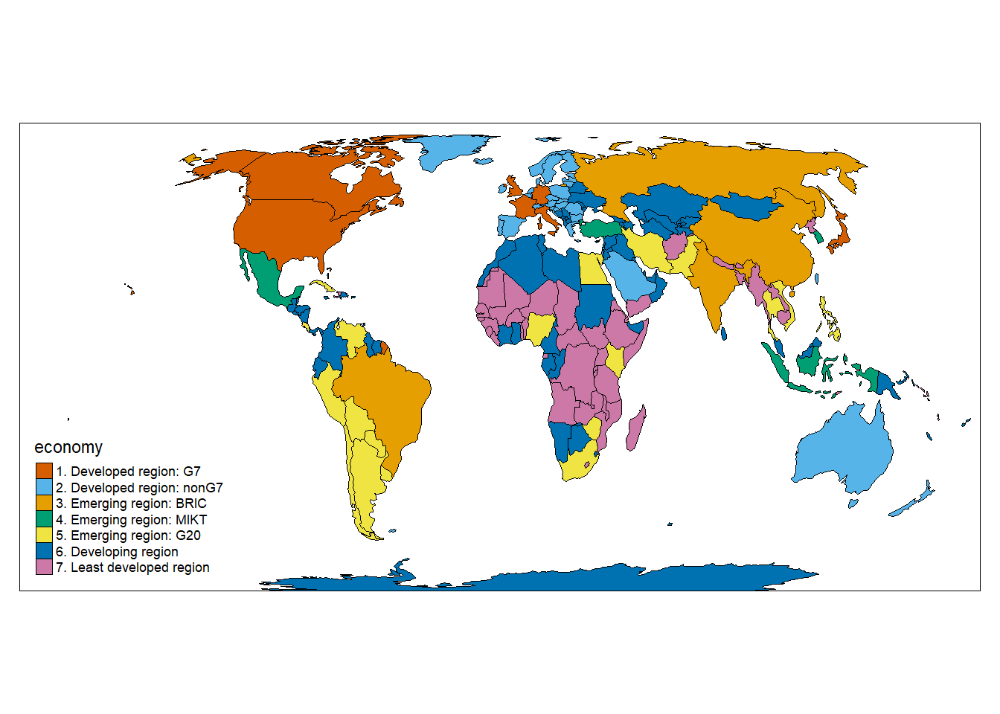
# choropleth with more specifications
qtm(World, fill="HPI", fill.n = 9, fill.palette = "div",
fill.title = "Happy Planet Index", fill.id = "name",
style = "gray", format = "World")
# Alternative to previous map - RECOMENDED
tm_shape(World) +
tm_polygons("HPI", n = 9, palette = "div",
title = "Happy Planet Index", id = "name") +
tm_style("gray") +
tm_format("World")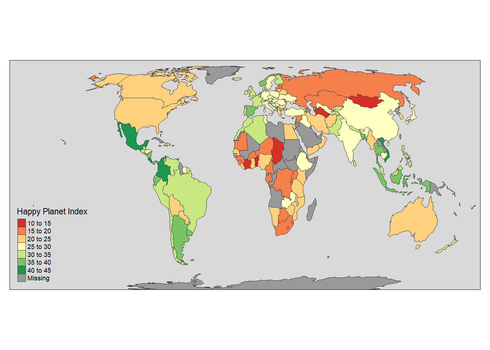
# Bubble map
qtm(World, borders = NULL) +
qtm(metro, symbols.size = "pop2010",
symbols.title.size= "Metropolitan Areas",
symbols.id= "name",
format = "World")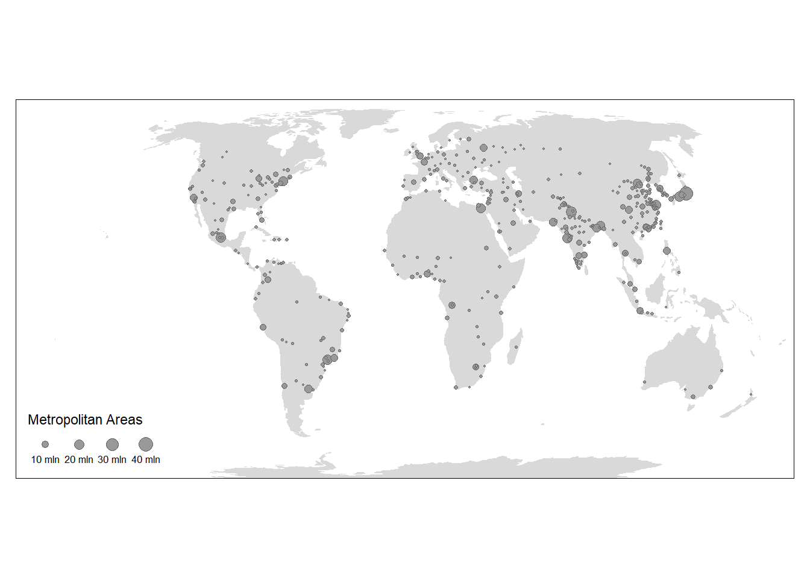
Para plotar dois mapas juntos com dados diferentes, experimente o seguinte código:
library(tmap)
t1 <- tm_shape(georgia_sf) +
tm_fill("coral") +
tm_borders() +
tm_layout(bg.color = "grey85")
t2 <- tm_shape(georgia2) +
tm_fill("orange") +
tm_borders() +
tm_layout(asp=0.86, bg.color = "grey95") #alinhar a segunda figura
t1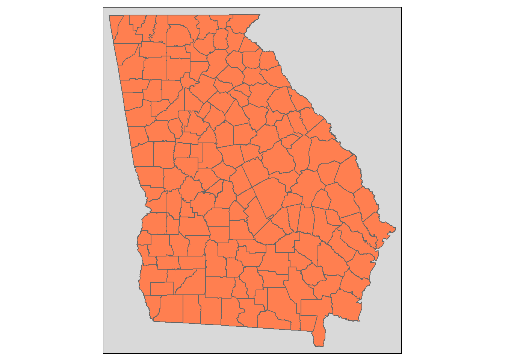
t2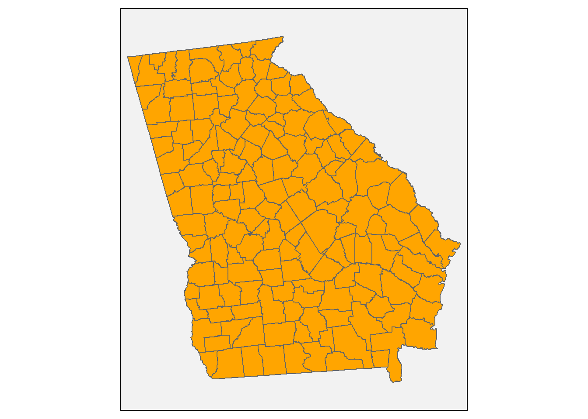
Para especificar o layout da figura combinando os mapas:
library(grid)
# abrir uma nova página de plotagem
grid.newpage()
# definir o layout
pushViewport(viewport(layout = grid.layout(1,2)))
# Plotar usando o comando print
print(t1, vp=viewport(layout.pos.col = 1, height = 5))
print(t2, vp=viewport(layout.pos.col = 2, height = 5))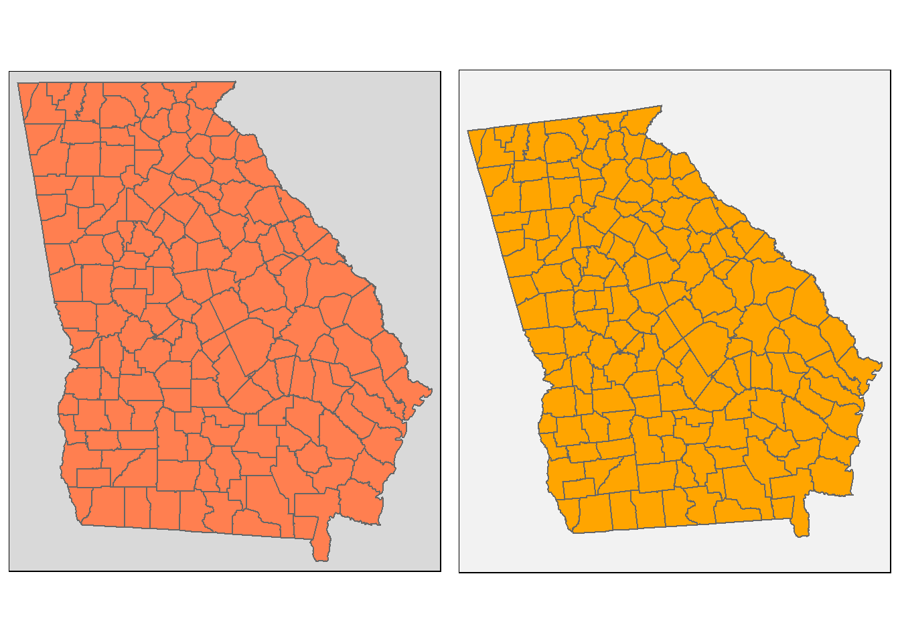 Repare que t1 é um objeto sf e t2 é um objeto sp e apresentam sistemas de referência diferentes.
Para consultar os diferentes sistemas de projeção, verifique utilizando a função crs.
## Warning in showSRID(uprojargs, format = "PROJ", multiline = "NO", prefer_proj = prefer_proj): Discarded datum Unknown
## based on WGS84 ellipsoid in CRS definition## Warning in showSRID(SRS_string, format = "PROJ", multiline = "NO", prefer_proj = prefer_proj): Discarded datum Unknown
## based on WGS84 ellipsoid in CRS definition## CRS arguments: +proj=longlat +ellps=WGS84 +no_defs## CRS arguments:
## +proj=aea +lat_1=29.5 +lat_2=45.5 +lat_0=23 +lon_0=-96 +x_0=0.0 +y_0=0.0 +ellps=GRS80 +units=m +datum=NAD83
## +no_defs +towgs84=0,0,0Para nomear os atributos, verifique o data.frame do objeto georgia_sf. Utilize a função names() para ter acesso a uma lista de nomes de todos os atributos.
names(georgia_sf)## [1] "Latitude" "Longitud" "TotPop90" "PctRural" "PctBach" "PctEld" "PctFB" "PctPov" "PctBlack" "X"
## [11] "Y" "ID" "Name" "MedInc" "geometry"# Construir um data frame com os nomes.
data.frame(georgia_sf)[,13]## [1] "Appling" "Atkinson" "Bacon" "Baker" "Baldwin" "Banks" "Barrow"
## [8] "Bartow" "Ben Hill" "Berrien" "Bibb" "Bleckley" "Brantley" "Brooks"
## [15] "Bryan" "Bulloch" "Burke" "Butts" "Calhoun" "Camden" "Candler"
## [22] "Carroll" "Catoosa" "Charlton" "Chatham" "Chattahoochee" "Chattooga" "Cherokee"
## [29] "Clarke" "Clay" "Clayton" "Clinch" "Cobb" "Coffee" "Colquitt"
## [36] "Columbia" "Cook" "Coweta" "Crawford" "Crisp" "Dade" "Dawson"
## [43] "Decatur" "DeKalb" "Dodge" "Dooly" "Dougherty" "Douglas" "Early"
## [50] "Echols" "Effingham" "Elbert" "Emanuel" "Evans" "Fannin" "Fayette"
## [57] "Floyd" "Forsyth" "Franklin" "Fulton" "Gilmer" "Glascock" "Glynn"
## [64] "Gordon" "Grady" "Greene" "Gwinnett" "Habersham" "Hall" "Hancock"
## [71] "Haralson" "Harris" "Hart" "Heard" "Henry" "Houston" "Irwin"
## [78] "Jackson" "Jasper" "Jeff Davis" "Jefferson" "Jenkins" "Johnson" "Jones"
## [85] "Lamar" "Lanier" "Laurens" "Lee" "Liberty" "Lincoln" "Long"
## [92] "Lowndes" "Lumpkin" "McDuffie" "McIntosh" "Macon" "Madison" "Marion"
## [99] "Meriwether" "Miller" "Mitchell" "Monroe" "Montgomery" "Morgan" "Murray"
## [106] "Muscogee" "Newton" "Oconee" "Oglethorpe" "Paulding" "Peach" "Pickens"
## [113] "Pierce" "Pike" "Polk" "Pulaski" "Putnam" "Quitman" "Rabun"
## [120] "Randolph" "Richmond" "Rockdale" "Schley" "Screven" "Seminole" "Spalding"
## [127] "Stephens" "Stewart" "Sumter" "Talbot" "Taliaferro" "Tattnall" "Taylor"
## [134] "Telfair" "Terrell" "Thomas" "Tift" "Toombs" "Towns" "Treutlen"
## [141] "Troup" "Turner" "Twiggs" "Union" "Upson" "Walker" "Walton"
## [148] "Ware" "Warren" "Washington" "Wayne" "Webster" "Wheeler" "White"
## [155] "Whitfield" "Wilcox" "Wilkes" "Wilkinson" "Worth"Para incluir os nomes, faça:
tm_shape(georgia_sf) +
tm_fill("white") +
tm_borders() +
tm_text("Name", size=0.3) +
tm_layout(frame = FALSE)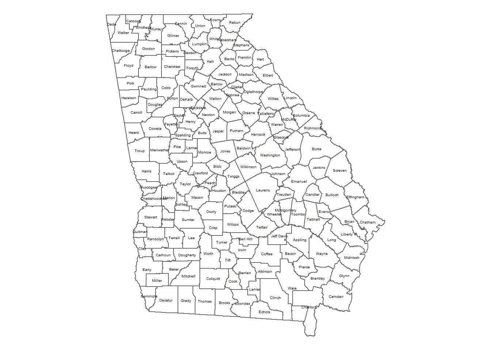 Para criar um subconjunto dos dados, é possível fazer uma seleção criando uma camada com o subconjunto por meio dos índices:
index <- c(81, 82, 83, 150, 62, 53, 21, 16, 124, 121, 17)
georgia_sub <- georgia_sf[index, ]Para sobrepor os mapas com as duas camadas, faça:
tm_shape(georgia_sf) +
tm_fill("white") +
tm_borders("grey", lwd=0.5) +
tm_shape(g) +
tm_borders(lwd=2) +
tm_shape(georgia_sub) +
tm_fill("lightblue") +
tm_borders() +
tm_layout(frame = TRUE, title = "Georgia com subconjunto", title.size=1, title.position = c(0.02, "bottom"))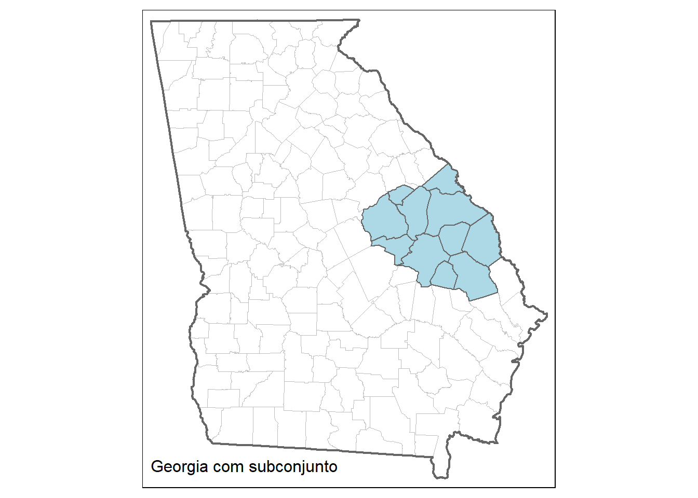
Sistemas de coordenadas
Verificar qual o sistema de referência em uso de dados espaciais vetoriais
library(sf)
st_crs(georgia_sf)## Coordinate Reference System:
## User input: +proj=longlat +ellps=WGS84
## wkt:
## GEOGCRS["unknown",
## DATUM["Unknown based on WGS84 ellipsoid",
## ELLIPSOID["WGS 84",6378137,298.257223563,
## LENGTHUNIT["metre",1],
## ID["EPSG",7030]]],
## PRIMEM["Greenwich",0,
## ANGLEUNIT["degree",0.0174532925199433],
## ID["EPSG",8901]],
## CS[ellipsoidal,2],
## AXIS["longitude",east,
## ORDER[1],
## ANGLEUNIT["degree",0.0174532925199433,
## ID["EPSG",9122]]],
## AXIS["latitude",north,
## ORDER[2],
## ANGLEUNIT["degree",0.0174532925199433,
## ID["EPSG",9122]]]]Verificar qual o sistema de referência em uso em dados espaciais matriciais
Sintaxe Proj4
| Parâmetro | Significado |
|---|---|
| +a | Semimajor radius of the ellipsoid axis |
| +b | Semiminor radius of the ellipsoid axis |
| +datum | Datum name |
| +ellps | Ellipsoid name |
| +lat_0 | Latitude of origin |
| +lat_1 | Latitude of first standard parallel |
| +lat_2 | Latitude of second standard parallel |
| +lat_ts | Latitude of true scale |
| +lon_0 | Central meridian |
| +over | Allow longitude output outside -180 to 180 range, disables wrapping |
| +proj | Projection name |
| +south | Denotes southern hemisphere UTM zone |
| +units | meters, US survey feet, etc. |
| +x_0 | False easting |
| +y_0 | False northing |
| +zone | UTM zone |
Base de dados EPGS
Alterar projeções
Como salvar meu mapa
data(newhaven)
pdf(file = 'map.pdf') # salva o mapa como pdf.
tm_shape(blocks) +
tm_borders() +
tm_shape(roads) +
tm_lines(col = "red") +
# embellish the map
tm_scale_bar(width = 0.22) +
tm_compass(position = c(0.8, 0.07)) +
tm_layout(frame = F, title = "New Haven, CT",
title.size = 1.5,
title.position = c(0.55, "top"),
legend.outside = T)
dev.off() # desconectar o arquivo gerado do ambiente de trabalho. É possível salvar por meio de outros formatos.
pdf()
png()
tiff()
Adicionando mapa de contexto
Em algumas situações um mapa de fundo é interessante. Há várias maneiras de fazer essa inclusão. Pelo OpenStreetMap, a ideia é fazer a definição da área a ser representada, fazer o download e plotar o mapa de fundo. Depois acrescentar o mapa em desenvolvimento.
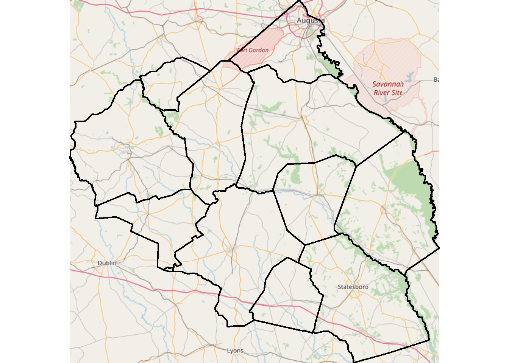
Visualização de fenômenos sociais no espaço
Mapas coropléticos

Mapas de pontos

Representação de fluxos
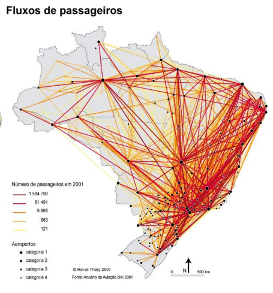
Mapas de calor

Cartogramas
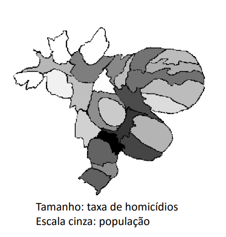
Símbolos proporcionais

Plotar pontos a partir de coordenadas
library(sf)
library(tmap)
data <- read_sf("D:/OneDrive - cefetmg.br/01_disciplinas/ERE/gis/02_pratica/dados_espaciais/ESCOLAS_PARTICULARES/ESCOLAS_PARTICULARES.shp")
bh <- read_sf("D:/OneDrive - cefetmg.br/01_disciplinas/ERE/gis/02_pratica/dados_espaciais/BAIRRO/BAIRRO.shp")
xy <- st_coordinates(data) # arquivo para calculos centrográficos
xy_coord <- as.data.frame(st_coordinates(data)) %>%
st_as_sf(coords = c('X', 'Y'), crs = 31983) # conversão em sf para representação espacial de coordenadas como pontostm_shape(data) +
tm_dots("ID_EQ_ED")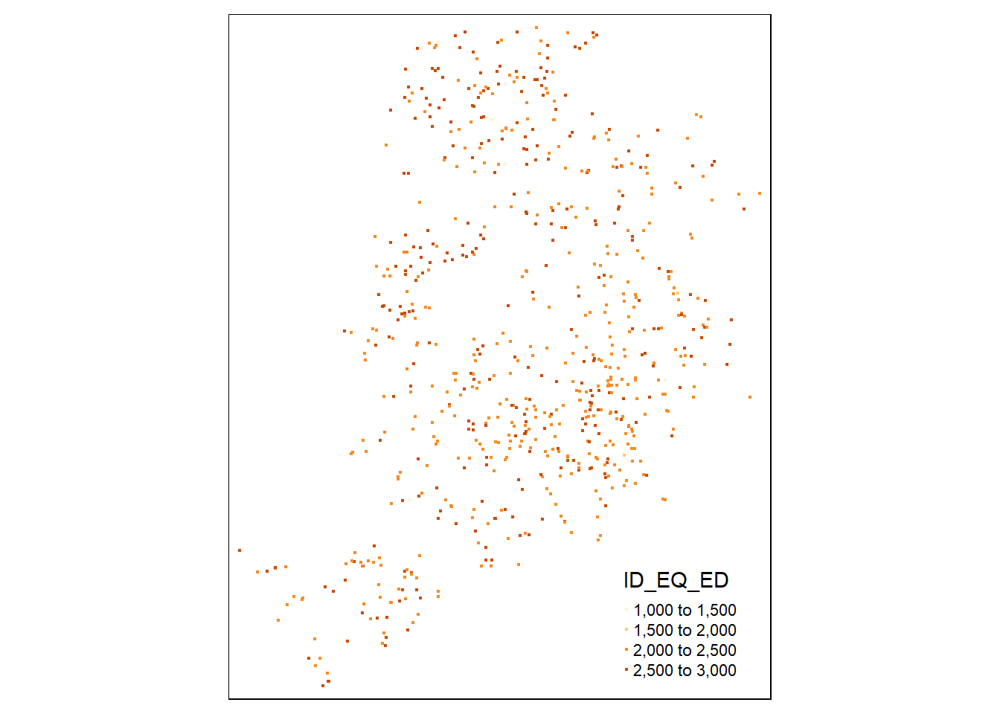
tm_shape(xy_coord) +
tm_dots(col="red")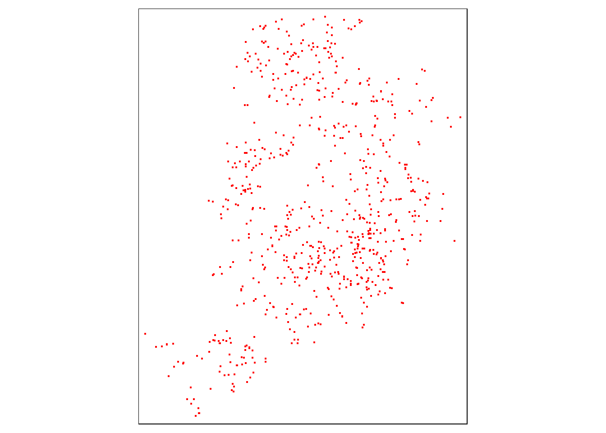
tm_shape(data) +
tm_bubbles("NUMERO", col="blue", alpha = 0.5) + # Considerando os números como número de alunos matriculados
tm_shape(bh) +
tm_borders(col = "grey40", lwd = 1, lty = "solid", alpha = NA)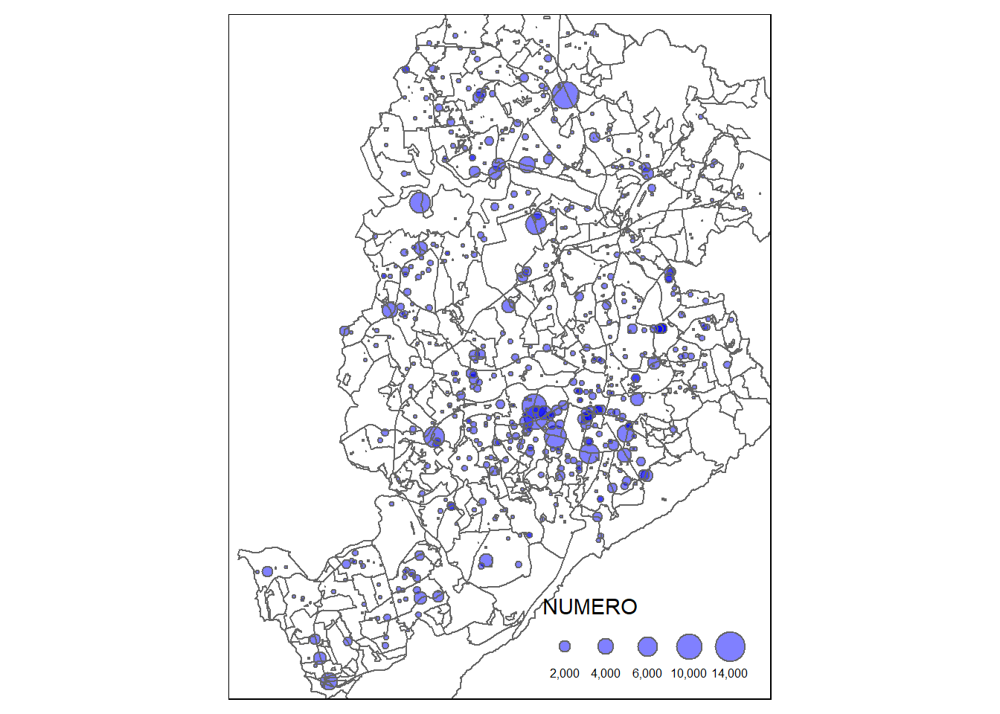
Esta obra esta licenciada sob Licenca Creative Commons Atribuicao-Compartilha Igual 4.0 Internacional.